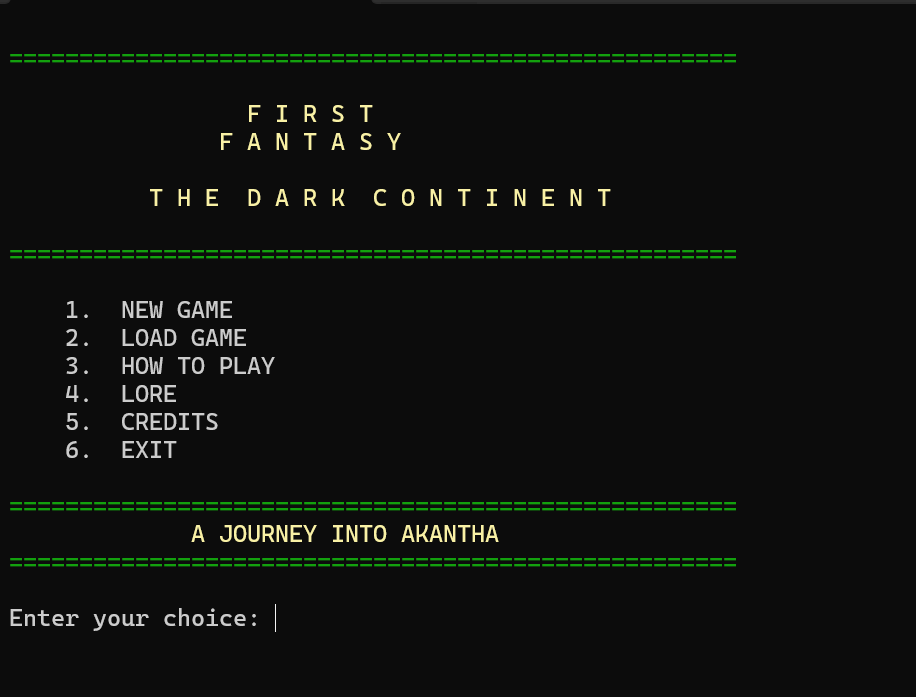

Languages
C++, HTML, CSS, Javascript
Indie Game Developer
I've spent over two decades working in the technology industry as a Business Analyst, developing a strong foundation in problem-solving, systems design, and bringing complex ideas together. Now, I'm taking that experience in a new direction by pursuing my passion for game development. I've been an avid gamer for as long as I can remember, with a particular love for role-playing games of just about every kind. Some might even call that obsession borderline unhealthy, but I prefer to think of it as extensive market research! For me, RPGs have always been about more than just gameplay. They're about the worlds we explore, the characters we connect with, and the stories that stay with us long after we've finished playing. My goal is to take that passion, combine it with my growing skills in programming and game development, and create original RPG experiences of my own. I don't just want to play in incredible worlds anymore. **I want to build them.**
About Me
### From Business Analyst to Game Developer My journey into game development is a combination of professional experience and a lifelong passion for gaming. After more than 10 years working in technology as a Business Analyst, I've developed a strong foundation in problem-solving, systems analysis, Agile development, and understanding how complex systems work together. I've always wanted to do more than analyze and improve systems. I've wanted to create them. That desire, combined with my love for RPGs, fantasy, science fiction, and storytelling, led me to pursue a degree in Game Development at Full Sail University. I particularly enjoy solving problems involving gameplay mechanics, character progression, combat systems, and the underlying architecture that brings a game world to life. As I've continued learning C++, object-oriented programming, and Unreal Engine, I've started turning ideas I've carried around for years into actual playable experiences. My long-term goal is to establish my own independent game studio and create original games that offer memorable worlds, engaging mechanics, and stories worth experiencing. **I've spent most of my life exploring worlds created by other people. Now I'm learning how to build my own.**
C++, HTML, CSS, Javascript
Visual Studio, Git, GitHub, Blender, Zbrush, Houdini, Substance Painter, Unreal Engine
Object-oriented programming, debugging, and clean code
Featured Work
Replace the sample information below with your own work. Add screenshots, explain what each project does, and describe your development process.

C++ Console Application
First Fantasy: The Dark Continent is a turn-based text adventure taking place in the fictional world of Akantha. Which is based off African religions, folklore, and cryptids. It is heavily influenced by games like Final Fantasy. This was my first portfolio project completed at Full Sail.
Time. For a four week project, I kind of took on more than I should have. However, I learned what it would take to complete a large project in such a small timeframe, as well as what my capabilties are to do so.
Contact
Replace the links below with your professional profiles. Do not publish your home address, student ID, personal phone number, or other private information.